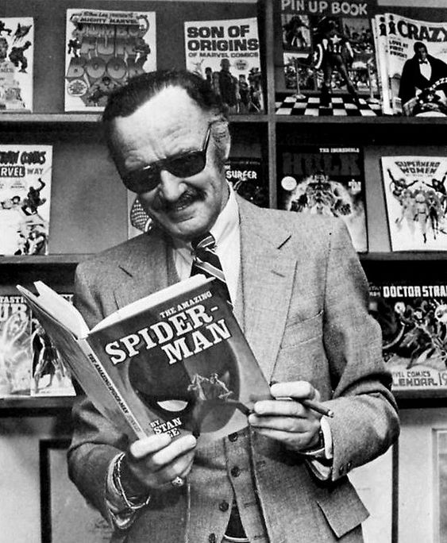

Stan Lee, el CEO de Marvel Cómics
Stanley Martin Lieber, mejor conocido en el mundo de los cómics como Stan Lee, nació el 28 de diciembre de 1922 en Manhattan, Nueva York.
Fue escritor, editor en jefe, y CEO de Marvel Comics.
En 1939 se convirtió en asistente en Timely Comics. Para 1960 esta empresa se convertiría en Marvel Comics. Su debut fue en una historieta de Capitán América de 1941, fue ahí cuando comenzó a utilizar el seudónimo Stan Lee. En 1942 se unió al Ejército de Estados Unidos. Para la década de los 60, la carrera de Lee comenzó a tomar mayor impulso, cuando la competencia, DC Comics, comenzó a trabajar en la Liga de la Justicia. Fue entonces que se le dio el encargo de trabajar en un proyecto similar. El proyecto incluía privilegiar el experimentar con tramas y darles a los personajes una humanidad defectuosa. Antes de esto, los superhéroes eran perfectos y sin problemas. El cambio que Lee introducía tenía complejidad, personajes más naturales, con mal temperamento, melancólicos y hasta enfermos. el primer grupo de superhéroes que creó fue Los 4 Fantásticos, junto con el artista Jack Kirby. Fue un éxito inmediato. Kirby y Lee trabajaron juntos para crear Hulk, Thor, Iron Man y X-Men. Con Steve Ditko desarrolló Doctor Strange y Spider-Man, el personaje más popular de Marvel. Desde entonces, todos vivían en el mismo universo. Tiempo después, Lee y Kirby decidieron poner a trabajar a todos los personajes juntos en el equipo llamado The Avengers. Para este momento, decidieron revivir a Capitán América y Sub-Mariner. La revolución de Lee, supuso enganchar a los lectores y el surgimiento de una comunidad entre fans y creadores. Gracias a esto, Marvel se convirtió en la editorial más importante de aquel momento, y dio paso al surgimiento de la Edad de Plata de los cómics en Estados Unidos. Para la década de los 70 se convirtió en la cara pública de Marvel Comics. En los 80, se mudó a California para desarrollar las propiedades de televisión y cine de la empresa.